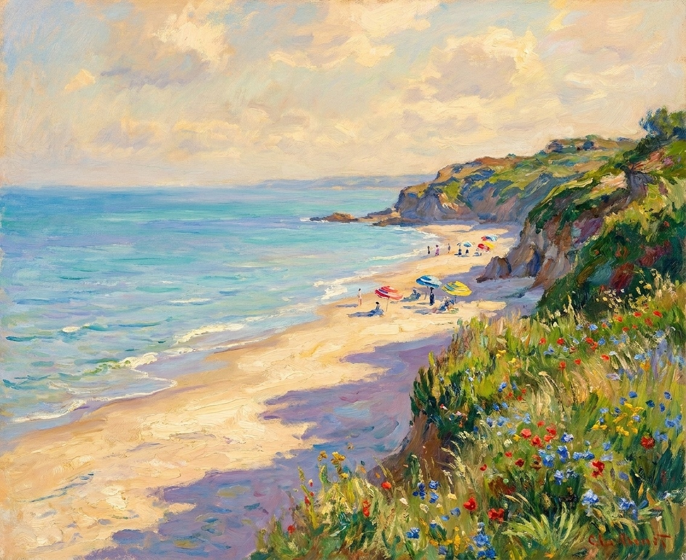
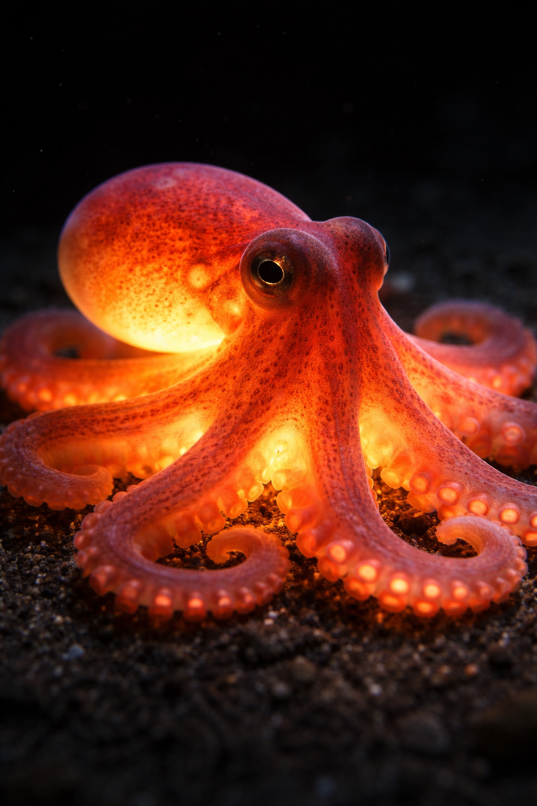
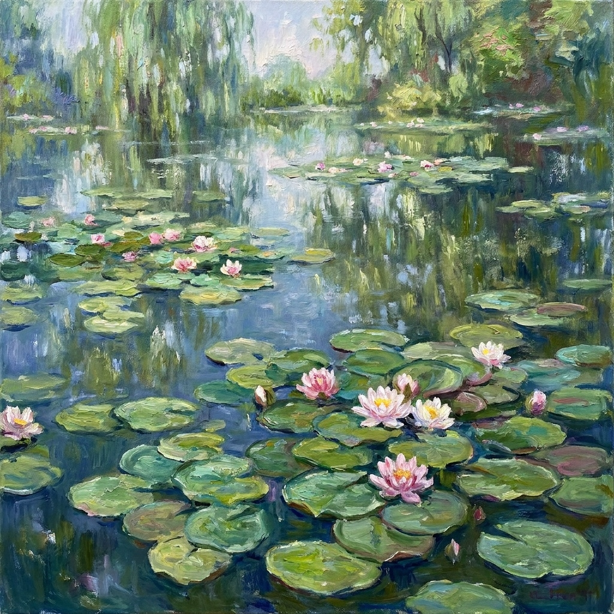

Михаил / Void Studio . Lab
Любопытство
принимает форму.
Пишу код. Исследую AI. Собираю идеи
в вещи, которые можно увидеть и потрогать.
Михаил / Void Studio . Lab
Всё начинается
с интереса.
К людям, изображениям и тому,
как устроены вещи.
Разработка и визуальные эксперименты.
Одна практика, много способов смотреть.
Немного
обо мне
Личное пространство
Привет. Я Михаил.
Мне интересно,
что получится,
если попробовать.
Здесь мои интересы обретают форму —
от визуального эксперимента до работающего приложения.
Разбираться.
Пробовать. Делать.
Меня увлекает момент, когда идея становится чем-то настоящим: изображением, движением, приложением. Хочется понять, как это работает, а потом собрать свою версию.
Void Studio — место для таких экспериментов. Здесь встречаются мой интерес к визуалу и желание создавать полезные инструменты.
AI-визуал · анимация · композиция
Сайты · боты · приложения · автоматизация
Графика · взаимодействие · WebGL
мои проекты↗